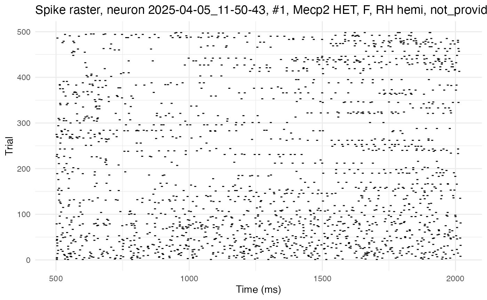
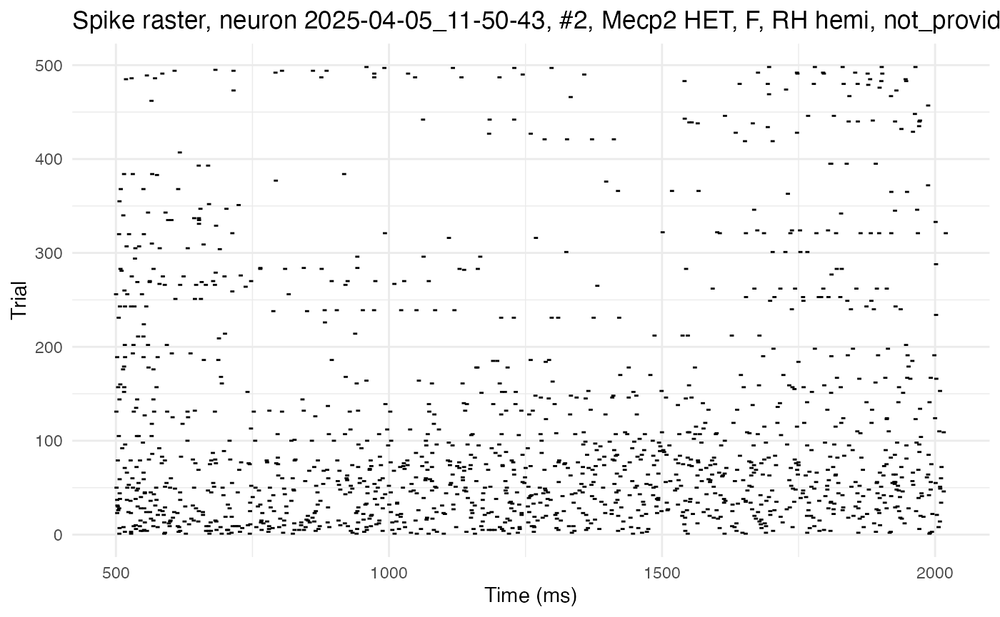
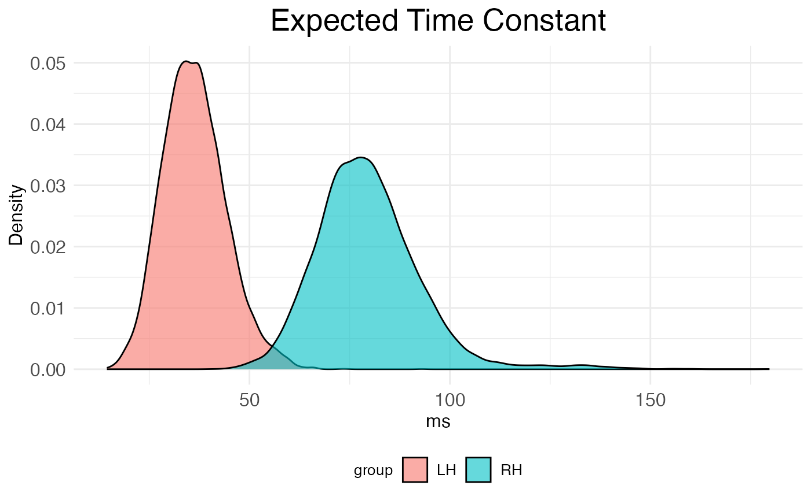
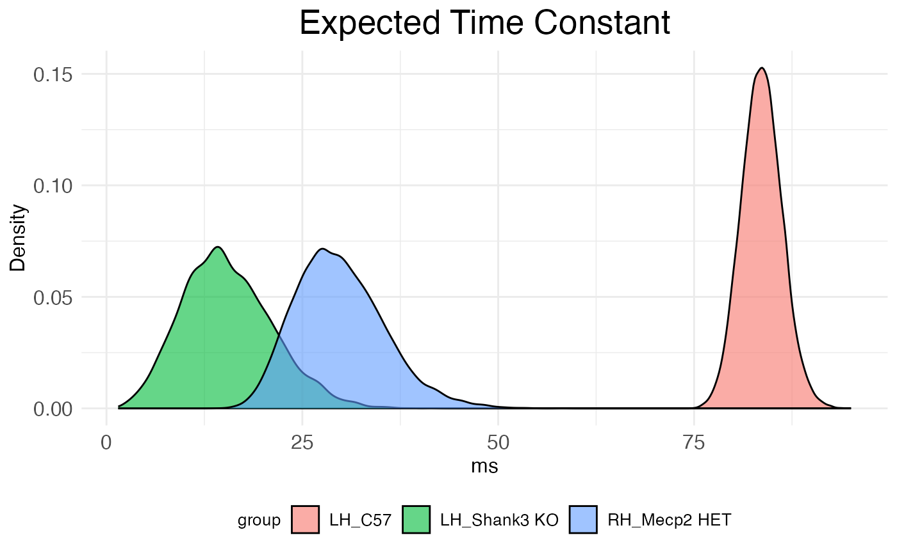

Dichotomized Gaussian analysis of KiloSort4 data
tutorial_DG_analysis_of_patch_clamp.RmdThis tutorial shows how to use the neurons package to run a dichotomized Gaussian (DG) analysis of autocorrelation on KiloSort4 data. The aim of this DG analysis of autocorrelation is to estimate the network time constant of single neurons in the left and right hemisphere of various genotypes of mice. Network time constants provide an estimate of recurrence. Specifically, a higher network time constant indicates that a neuron receives a larger number of projections back on itself. Intuitively, the longer into the future a spike now increases the probability of a spike later, the stronger the connections from that neuron back onto itself must be.
Setup
The first step is to set up the R environment by clearing the workspace, setting a random-number generator seed, and loading the neurons package.
# Clear the R workspace to start fresh
rm(list = ls())
# Set seed for reproducibility
set.seed(12345)
# Load neurons package
library(neurons) Load data
This tutorial uses data recorded by multi-channel probes from the auditory cortex of mice with spike clusters extracted with kilosort4, plus a csv file with stimulus event information. A path to the data must be provided.
# Set path to data
demo_data <- "/Users/michaelbarkasi/Library/CloudStorage/OneDrive-WashingtonUniversityinSt.Louis/projects_Oviedo_lab/_lateralized_recurrent_pathways/dichot-gaussian/data_demo"The function preprocess.kilo4 (from the neurons package) will be used to process the data. This function expects data_path to point to a folder the subfolders of which each contain a single kilosort4 output. This output should be in its own folder kilosort4. While kilosort outputs many files, only six are needed:
-
spike_positions.npy: 2D array giving the x and y
position of each spike
-
spike_clusters.npy: integer giving the cluster
number of each spike
-
spike_times.npy: sample number the spike occurred
at
-
cluster_group.tsv: 2D array giving status of each
cluster (0=noise, 1=MUA, 2=Good, 3=unsorted), hand-curated
- cluster_info.tsv: 2D array giving the automatic output of kilosort4; not needed if cluster_group.tsv has data.
- includeVector.mat: MATLAB file giving whether each cluster is stimulus-responsive (1) or not (0)
More of the kilosort4 output files can be included, but only the above files (minus cluster_info.tsv) are required. In addition, along with the kilosort4 subfolder, there should be a file StimulusStamps.csv in each recording folder.

Folder structure necessary for preprocess.kilo4 function.
Meta data can also be pulled from the recordings. For this tutorial, the csv file with that data is in the neurons package itself. It can be loaded with the regular read.csv function in R.
# Load
kilo4_metadata <- read.csv(
system.file(
"extdata",
"meta_data_kilo4demo.csv",
package = "neurons"
)
)
# Preview
print(head(kilo4_metadata))## DAY Neuralynx_ID EXPER HEMISPHERE PROBE COORDINATES_SHANK_1 COORDINATES_SHANK_2 STRAIN AGE SEX DEPTH
## 1 2025-02-06 13-06-34 001-001 RH H10b 0,0 0,0 C57 P79 F 1156.0
## 2 2025-02-06 14-03-05 001-002 RH H10b 0,0 0,0 C57 P79 F 1209.0
## 3 2025-02-06 15-36-59 001-004 RH H10b 0,0 0,0 C57 P79 F 1003.0
## 4 2025-02-06 15-53-03 001-005 RH H10b 0,0 0,0 C57 P79 F 1003.0
## 5 2025-02-20 16-19-12 001-001 RH H10b 0,0 0,0 Mecp2 HET P79 F 1191.4
## 6 2025-02-20 17-04-02 001-002 RH H10b 0,0 0,0 Mecp2 HET P79 F 1191.4For statistical analysis, covariates of interest are all that’s needed from the meta data file. The neurons package (as of v1.0) can only handle certain covariates, and expects them to have specific names (type, genotype, sex, hemi, region, age). The package also expects the data frame holding those covariates to have rows labeled with recording names that match the format of the recording names in the data.
# Format and apply recording names to metadata as row names
rownames(kilo4_metadata) <- paste0(
kilo4_metadata$DAY,
"_",
kilo4_metadata$Neuralynx_ID
)
# Keep only the relevant columns (covariates of interest)
kilo4_metadata <- kilo4_metadata[,c("HEMISPHERE","STRAIN","AGE","SEX")]
# Rename columns to match what's expected by neurons package
colnames(kilo4_metadata) <- c("hemi", "genotype", "age", "sex")
# Preview
print(head(kilo4_metadata))## hemi genotype age sex
## 2025-02-06_13-06-34 RH C57 P79 F
## 2025-02-06_14-03-05 RH C57 P79 F
## 2025-02-06_15-36-59 RH C57 P79 F
## 2025-02-06_15-53-03 RH C57 P79 F
## 2025-02-20_16-19-12 RH Mecp2 HET P79 F
## 2025-02-20_17-04-02 RH Mecp2 HET P79 FPreprocess data into spike rasters
The function preprocess.kilo4 converts raw cluster spike times into spike rasters of a standardized format expected by the neurons package. The recordings must be partitioned into trials, which preprocess.kilo4 does with start and stop times relative to a stimulus. For example, information about responses to stimuli can be analyzed by setting the start time to something negative (before the stimulus) and the end time to something positive (after the stimulus). However, for estimating autocorrelation, it’s the spontaneous activity during a period of silence after the stimulus which should be analyzed. In this case, the start time should be some time after the stimulus (to allow for settling) and the end time some time later.
spike.rasters.kilo4 <- preprocess.kilo4(
trial_time_start = 500, # ms
trial_time_end = 500 + 1520, # ms
recording.folder = demo_data,
meta_data = kilo4_metadata,
max_spikes = 1e4,
min_spikes = 1e2,
min_trials = 1e2,
pure_trials_only = TRUE,
good_cells_only = TRUE,
stim_responsive_only = TRUE,
verbose = FALSE
)
spike.rasters.exper <- read.csv(
system.file(
"extdata",
"spike_rasters_2022data.csv",
package = "neurons"
)
)A path (such as demo_data) for the actual data must be passed to preprocess.kilo4. Meta data (such as kilo4_metadata) can also be provided, but is not necessary. If left out, the preprocessed output will simply lack information about covariates.
In addition to the start and stop times and pointers to the data, preprocess.kilo4 has four Boolean variables, pure_trials_only, good_cells_only, stim_responsive_only, and verbose. The first, pure_trials_only, controls whether trials which overlap with another (i.e., have a start time before the end time of any previous trials) are included in the data. The second, good_cells_only, controls whether spike clusters are included without passing hand curation. Likewise, the third, stim_responsive_only controls whether spike clusters are included without being responsive to stimului. Finally, if verbose is set to TRUE, the function will print out information about the files it is finding and parsing.
A floor can be set for the minimum number of spikes (min_spikes) and trials (min_trials) a cell must have to be included in the output. Cells with fewer spikes or trials will be excluded. Similarly, a ceiling can be set for spikes (max_spikes).
The output spike.rasters.kilo4 is a list with three elements: spikes, timeXtrial, and cluster.key. The first element, spikes, is a data frame giving a sparse representation of the spike rasters from each recording. Each row is a spike, with columns giving information such as cell number, time, and genotype. Here are the first few rows of the spikes data frame:
## trial sample cell time_in_ms recording_name cluster hemi genotype age sex
## 3767 1 6881.530 1 503.2369 2025-04-05_11-50-43 17 RH Mecp2 HET P64 F
## 3768 1 6884.632 2 506.3389 2025-04-05_11-50-43 34 RH Mecp2 HET P64 F
## 3770 1 6888.790 3 510.4969 2025-04-05_11-50-43 82 RH Mecp2 HET P64 F
## 3772 1 6892.552 4 514.2589 2025-04-05_11-50-43 1 RH Mecp2 HET P64 F
## 3781 1 6903.673 5 525.3799 2025-04-05_11-50-43 12 RH Mecp2 HET P64 F
## 3783 1 6906.115 2 527.8219 2025-04-05_11-50-43 34 RH Mecp2 HET P64 FThe second element, timeXtrial, is a list of matrices, one per cell, with rows corresponding to time bins and columns to trials. Each entry is a binary indicator of whether the cell fired in that time bin during that trial. (No example shown here.)
The third element, cluster.key, is a data frame with rows representing cells, columns giving information such as cell number, genotype, and number of spikes. Here are the first few rows of the cluster.key data frame:
## recording.name cell cluster num.of.spikes num.of.responsive.trials hemi genotype age sex
## 2025-04-05_11-50-43 2025-04-05_11-50-43 1 17 1869 337 RH Mecp2 HET P64 F
## 2025-04-05_11-50-43.1 2025-04-05_11-50-43 2 34 1457 271 RH Mecp2 HET P64 F
## 2025-04-05_11-50-43.2 2025-04-05_11-50-43 3 82 2321 325 RH Mecp2 HET P64 F
## 2025-04-05_11-50-43.3 2025-04-05_11-50-43 4 1 2461 396 RH Mecp2 HET P64 F
## 2025-04-05_11-50-43.4 2025-04-05_11-50-43 5 12 4153 355 RH Mecp2 HET P64 F
## 2025-04-05_11-50-43.5 2025-04-05_11-50-43 6 95 2263 360 RH Mecp2 HET P64 FImportant summary information can be pulled from the cluster.key data frame. For example, how many cells were included in the output?
## Number of cells included: 37The number of cells and summary statistics such as mean spike and trial count per covariate combination can be pulled as well: (Age left off for simplicity.)
# Get all combinations of covariates
covariate_combos <- expand.grid(
genotype = unique(spike.rasters.kilo4$cluster.key$genotype),
hemi = unique(spike.rasters.kilo4$cluster.key$hemi),
sex = unique(spike.rasters.kilo4$cluster.key$sex)
)
n_cells <- rep(NA, nrow(covariate_combos))
mean_spikes <- rep(NA, nrow(covariate_combos))
mean_trials <- rep(NA, nrow(covariate_combos))
# Loop through combinations and print summary stats
for (cv in 1:nrow(covariate_combos)) {
combo <- covariate_combos[cv, ]
subset_key <- spike.rasters.kilo4$cluster.key[
spike.rasters.kilo4$cluster.key$genotype == combo$genotype &
spike.rasters.kilo4$cluster.key$hemi == combo$hemi &
spike.rasters.kilo4$cluster.key$sex == combo$sex,
]
if (nrow(subset_key) > 0) {
n_cells[cv] <- nrow(subset_key)
mean_spikes[cv] <- round(mean(subset_key$num.of.spikes),1)
mean_trials[cv] <- round(mean(subset_key$num.of.responsive.trials),1)
}
}
# Print results
print(data.frame(covariate_combos, n_cells, mean_spikes, mean_trials))## genotype hemi sex n_cells mean_spikes mean_trials
## 1 Mecp2 HET RH F 26 1946.9 324.2
## 2 Shank3 KO RH F NA NA NA
## 3 C57 RH F NA NA NA
## 4 Mecp2 HET LH F NA NA NA
## 5 Shank3 KO LH F 1 1334.0 297.0
## 6 C57 LH F 1 2587.0 449.0
## 7 Mecp2 HET RH M NA NA NA
## 8 Shank3 KO RH M NA NA NA
## 9 C57 RH M NA NA NA
## 10 Mecp2 HET LH M NA NA NA
## 11 Shank3 KO LH M 9 728.0 173.0
## 12 C57 LH M NA NA NAMaking neurons
With the kilosort4 data preprocessed into spike rasters, the next step is to convert them into a special class of object from the neuron package, neuron.
neurons.kilo4 <- load.rasters.as.neurons(
spike.rasters.kilo4$spikes,
sample_rt = 1e3
)
neurons.exper <- load.rasters.as.neurons(spike.rasters.exper)We want to load the spike rasters as neurons because neuronss come with built-in methods for plotting rasters, plotting autocorrelation, and estimating autocorrelation parameters with dichotomized Gaussian simulations.
For example, here is the raster from one of the C57, RH cells:
test <- process.autocorr(neurons.kilo4)
i <- 1
plot.raster(neurons.kilo4[[i]])
neurons.kilo4[[i]]$set_edf_initials(0.001, 1.0)
neurons.kilo4[[i]]$set_edf_termination(1e-8, 1000)
neurons.kilo4[[i]]$compute_autocorrelation("sum")
neurons.kilo4[[i]]$fit_autocorrelation()
print(neurons.kilo4[[i]]$fetch_EDF_parameters())## A tau bias_term
## 7.969024e-03 2.138234e+02 1.380757e-03
plot.autocorrelation(neurons.kilo4[[i]])
i <- 2
plot.raster(neurons.kilo4[[i]])
neurons.kilo4[[i]]$set_edf_initials(0.001, 1.0)
neurons.kilo4[[i]]$set_edf_termination(1e-8, 1000)
neurons.kilo4[[i]]$compute_autocorrelation("sum")
neurons.kilo4[[i]]$fit_autocorrelation()
print(neurons.kilo4[[i]]$fetch_EDF_parameters())## A tau bias_term
## 4.524953e-03 4.612833e+02 8.391076e-04
plot.autocorrelation(neurons.kilo4[[i]])
# ... set number of sims to run per neuron
n_sims <- 100
# ... set number of trials to simulate per neuron
n_trials <- 500
# ... run estimates on data
autocor.ests.kilo4 <- estimate.autocorr.params(
neuron_list = neurons.kilo4,
n_trials_per_sim = n_trials,
n_sims_per_neurons = n_sims,
bin_count_action = "sum",
A0 = 0.001,
tau0 = 1.0,
ctol = 1e-8,
max_evals = 500,
verbose = FALSE
)
autocor.ests.exper <- estimate.autocorr.params(
neuron_list = neurons.exper,
n_trials_per_sim = n_trials,
n_sims_per_neurons = n_sims,
bin_count_action = "sum",
A0 = 0.001,
tau0 = 1.0,
ctol = 1e-8,
max_evals = 500,
verbose = FALSE
)Run analysis:
autocorr_results0 <- analyze.autocorr(
autocor.ests.exper,
covariate = c("hemi"),
n_bs = 1e4
)
df0 <- data.frame(
value = unlist(autocorr_results0, use.names = FALSE),
group = rep(names(autocorr_results0), each = nrow(autocorr_results0))
)
# Plot
title_size <- 20
axis_size <- 12
legend_size <- 10
ggplot2::ggplot(df0, ggplot2::aes(x = value, fill = group)) +
ggplot2::geom_density(alpha = 0.6) +
#scale_y_continuous(transform = "log1p") +
ggplot2::labs(title = "Expected Time Constant", x = "ms", y = "Density") +
ggplot2::theme_minimal() +
ggplot2::theme(
plot.title = ggplot2::element_text(hjust = 0.5, size = title_size),
axis.title = ggplot2::element_text(size = axis_size),
axis.text = ggplot2::element_text(size = axis_size),
legend.title = ggplot2::element_text(size = legend_size),
legend.text = ggplot2::element_text(size = legend_size),
legend.position = "bottom"
)
autocorr_results <- analyze.autocorr(
autocor.ests.kilo4,
covariate = c("hemi","genotype"),
n_bs = 1e4
)
df <- data.frame(
value = unlist(autocorr_results, use.names = FALSE),
group = rep(names(autocorr_results), each = nrow(autocorr_results))
)
# Plot
title_size <- 20
axis_size <- 12
legend_size <- 10
ggplot2::ggplot(df, ggplot2::aes(x = value, fill = group)) +
ggplot2::geom_density(alpha = 0.6) +
#scale_y_continuous(transform = "log1p") +
ggplot2::labs(title = "Expected Time Constant", x = "ms", y = "Density") +
ggplot2::theme_minimal() +
ggplot2::theme(
plot.title = ggplot2::element_text(hjust = 0.5, size = title_size),
axis.title = ggplot2::element_text(size = axis_size),
axis.text = ggplot2::element_text(size = axis_size),
legend.title = ggplot2::element_text(size = legend_size),
legend.text = ggplot2::element_text(size = legend_size),
legend.position = "bottom"
)